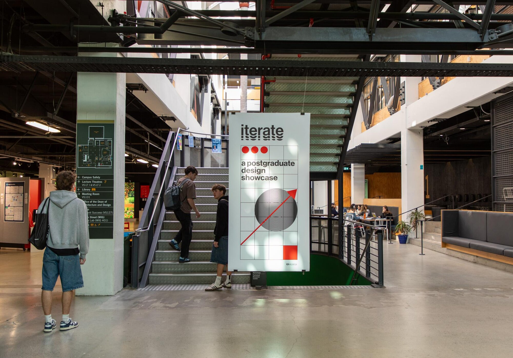
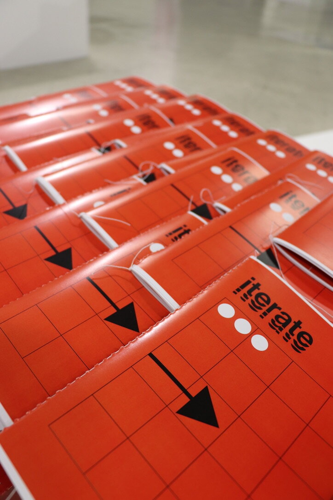
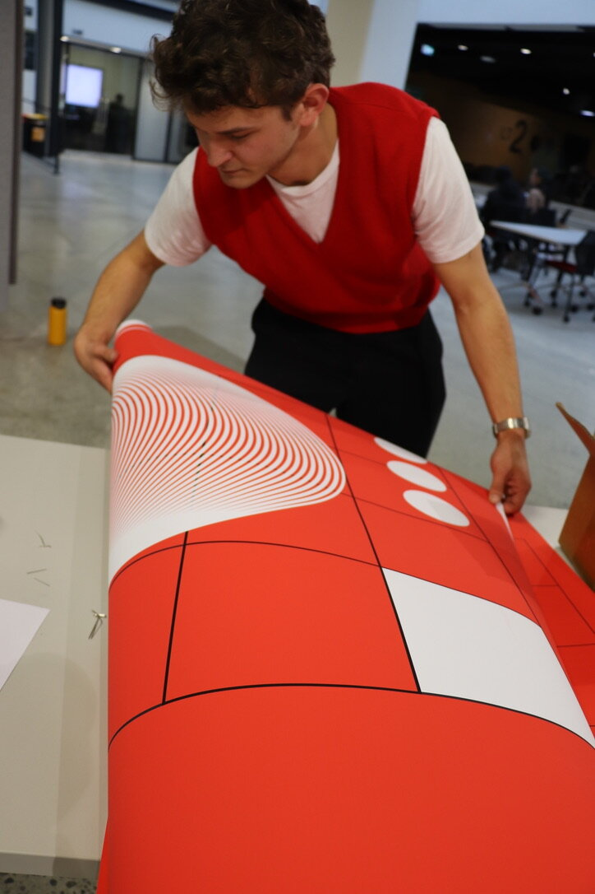
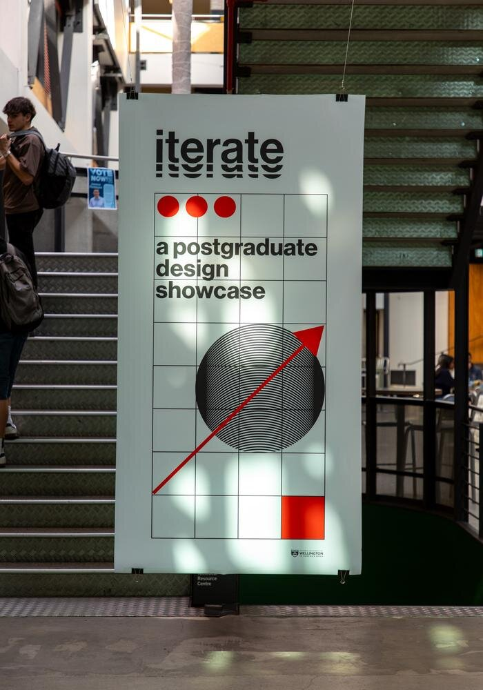
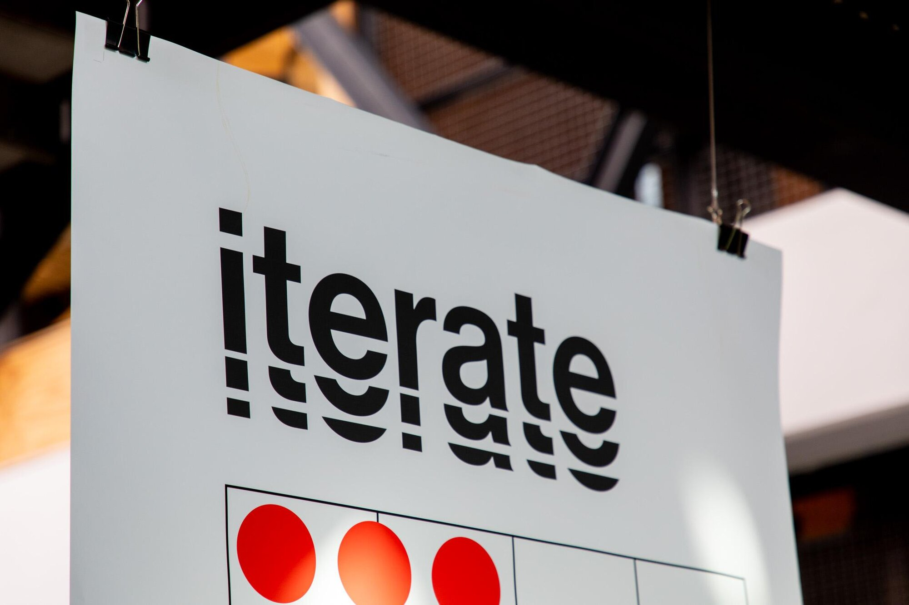
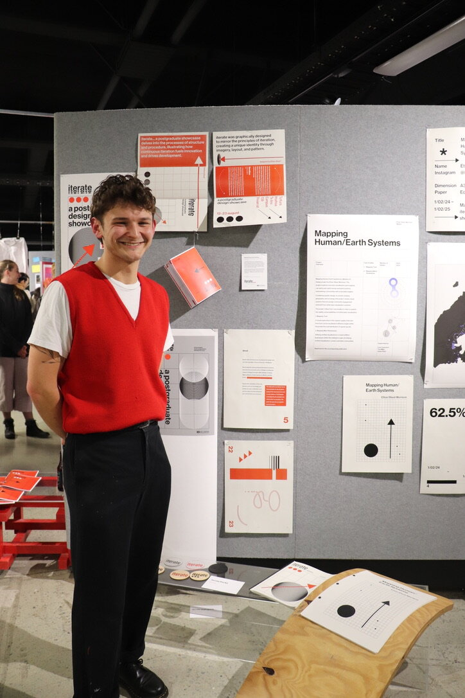
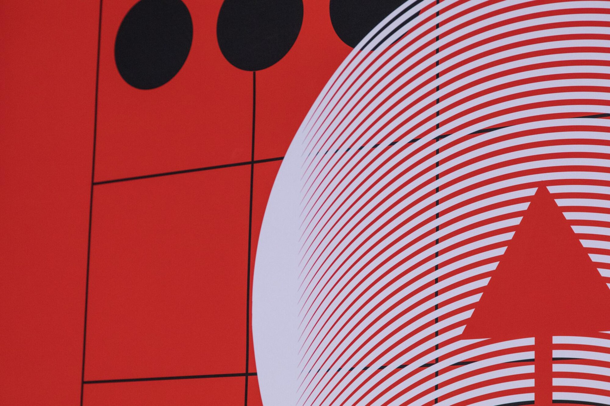

Overview
Iterate was the 2024 postgraduate design showcase for Te Herenga Waka Victoria University of Wellington. My role was to develop the exhibition's graphic identity, spatial language, and digital presence. The goal was to create a cohesive yet flexible system that celebrated the diverse and research-driven practices of the students involved.

Approach
The exhibition identity system was built around the idea of modular rhythm—how distinct visual units could combine, repeat, and adapt across spatial and digital applications. I designed a typographic poster series, gallery signage, a printed catalogue, and a website that all worked within this system while allowing space for individual project narratives to stand out.


Tools
- Adobe InDesign
- Adobe Illustrator
Gallery



